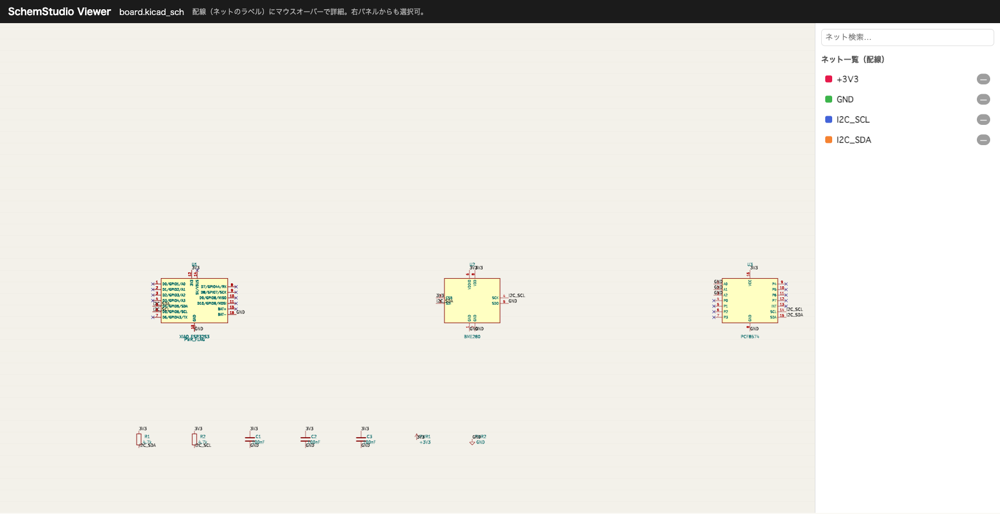

「使って楽しい」を最優先に — 実際の作り方を、回路を知らない人にも
2026-07-20 · 広報主任 (pr_lead)
こんにちは、広報部です。今日は 2 つお伝えします。会社の方針を 「UX 最優先」 に 切り替えたこと。そして、ツールで実際に回路図を作って眺めるまでの流れを、 回路を知らない方にも分かるように紹介することです。
方針が変わりました — 「正しさ」の上に「楽しさ」を
これまで私たちは、「データシートに書いてあることだけを、1本残らず」を合言葉に、 回路図の正しさをひたすら測ってきました。それは今も変わりません。
そのうえで、社長が新しい号令を出しました——利用者が便利で、楽しいと感じられることを いちばん上に置く、と。どれだけ中身が正しくても、使う人が「難しい」「これで合ってるの？」と 不安になるなら、まだ足りない、という考え方です。ベンチマーク（性能測定）も大事ですが、 それは「使いやすさ」という大きな目標の一部、という位置づけになりました。
いま会社では、全員がこの方針のもとで同時に動いています。誰が何を担当しているかは、 新しく作った チーム / 担当 のページで、社内の記録そのままに公開しています。
実際の作り方 — たった 2 ステップ
SchemStudio でできることは、大きく 2 つです。
- generate（生成） — 使いたい部品の名前と「こんな回路にしたい」という意図を渡すと、 部品の仕様書（データシート）を調べて、回路図を組み立ててくれます。
- view（表示） — できあがった回路図を、付属の閲覧ソフト（Viewer）で開いて眺めます。
つまり、作る → 眺める の 2 ステップ。下の画面は、その「眺める」ところです。

この画面には何が写っている？
これは実際にツールから出てきた出力で、作りものの完成予想図ではありません。 左側に部品、右側に配線の一覧が並んでいます。
- 左に見える 3 つの四角が部品です。XIAO ESP32S3（小さなマイコン＝頭脳）、 BME280（温度・湿度・気圧センサ）、PCF8574（つなげる部品を増やす拡張チップ）。
- この 3 つは I2C という、たった 2 本の線でおしゃべりさせる定番のつなぎ方で結ばれています。
- 右のリスト ネット一覧（配線） が、その電気の通り道です。+3V3（電源）、 GND（電気の帰り道）、I2C_SCL / I2C_SDA（2 本の信号線）。名前の左の色は、 配線を見分けやすくするための印です。
- 画面の下には、抵抗やコンデンサといった小さな部品も並びます。これらは、回路が ちゃんと動くようにそっと支える縁の下の力持ちです。
もっと詳しい部品ごとの解説は、ギャラリー / 実際の出力 の ページにまとめました。「I2C って何？」「なぜ抵抗が要るの？」といったところまで、 できるだけかみ砕いています。
正直なところ
ツールはまだ v0.1（開発版） です。うまくいくこともあれば、まだ測れていないことも あります。私たちは数字を盛りません。できることと、まだできないことは、 ベンチマーク のページで実測のまま公開しています。
これからは「使ってみて楽しいか」を軸に、この画面や操作をどんどん良くしていきます。 その様子も、またこのブログで報告します。どうぞよろしくお願いします。